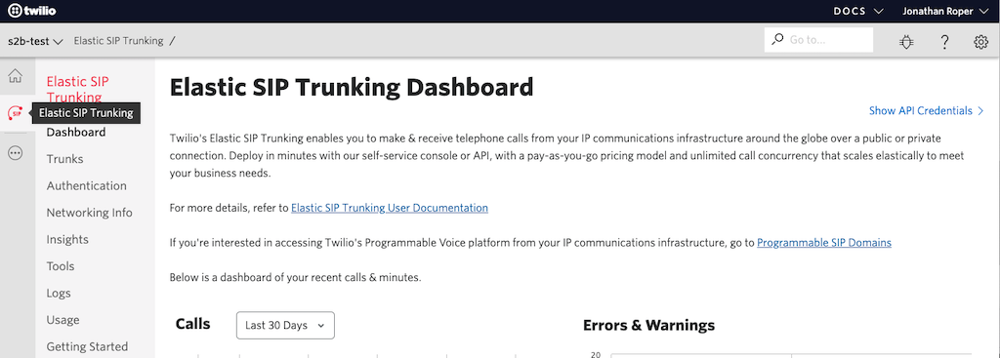
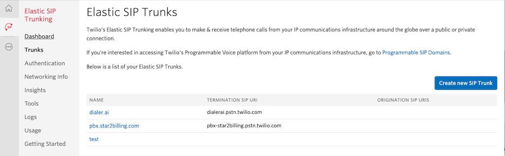
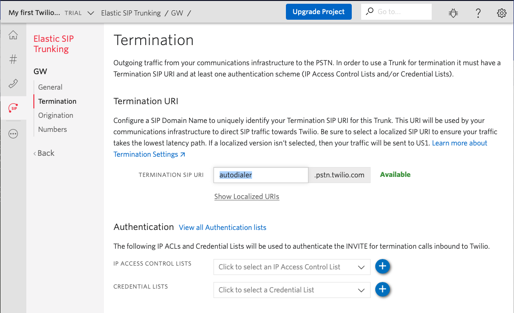
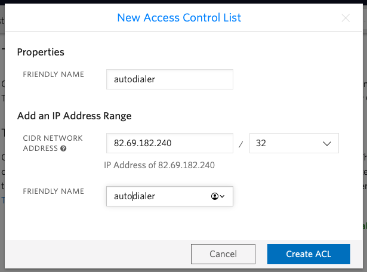
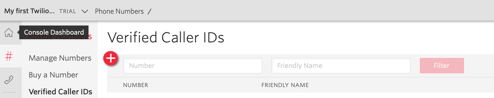
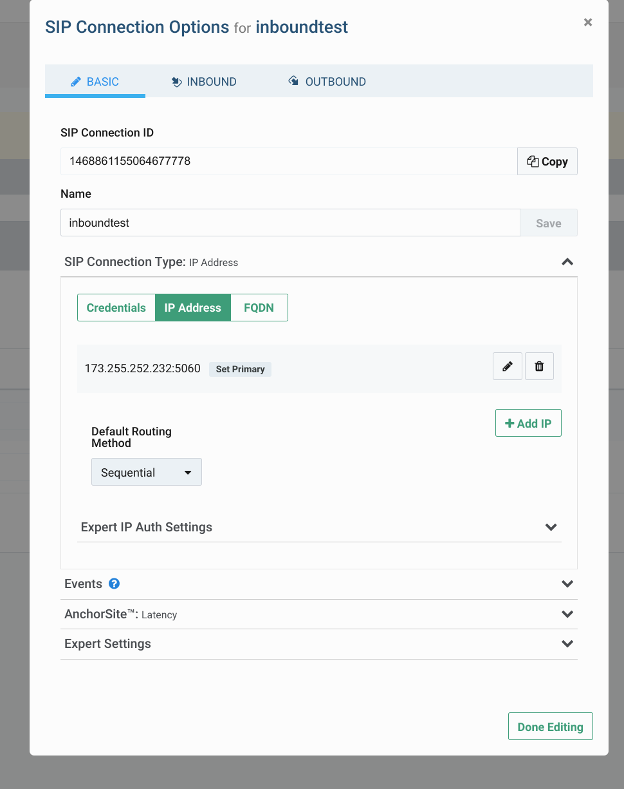
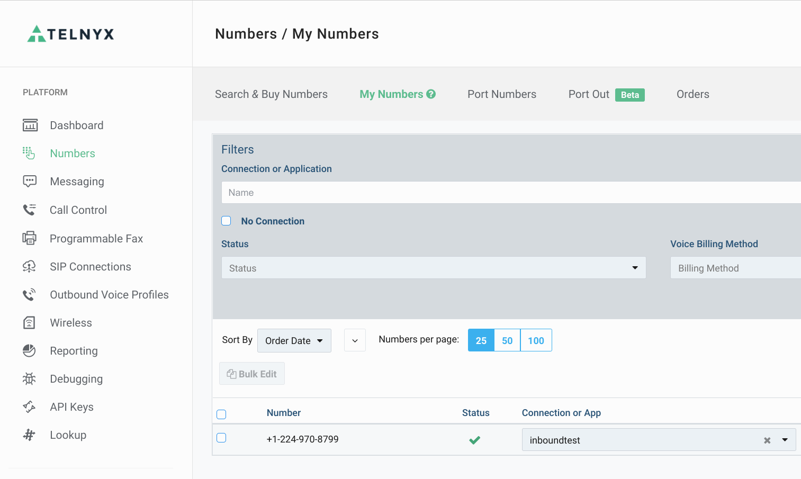
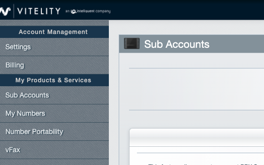
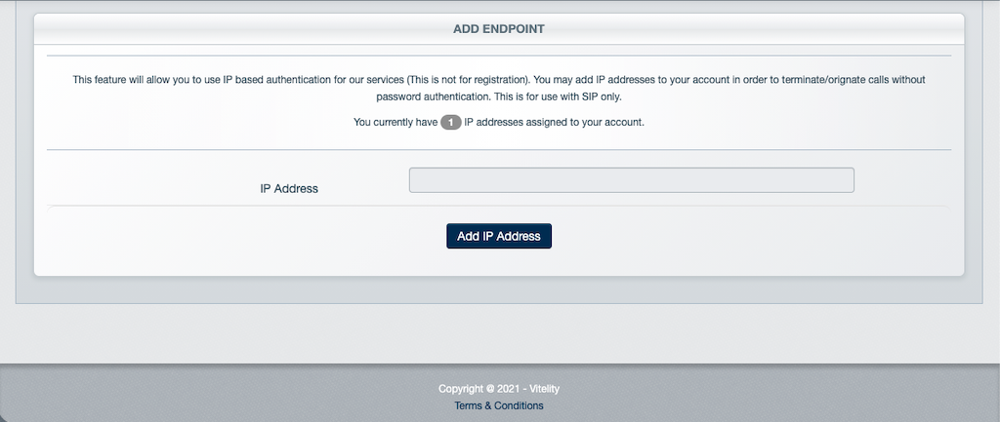
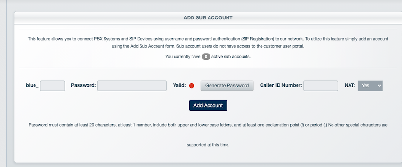

Setting up VoIP Telecoms Carriers¶
Introduction¶
We sell dialer systems all over the world. We are not licensed telecoms operators so we do not include telephone numbers and calling time with the dialer. You can choose your own VoIP telecoms provider.
The Dialer Support Team will help you set up your telecoms carrier on the Dialer.
Ideally, you should choose a wholesale telecoms carrier which allows you to set your own callerID.
VoIP / SIP gateways authenticate using the following methods:
- IP Authentication: Accept traffic from a given IP address.
- Digest Authentication: Authenticate using a username and password
- IP Auth + Tech Prefix: Less common than the two above. A unique number is prepended to the dialled digits
Terms and Conditions¶
Before engaging a VoIP telecoms carrier, check the terms and conditions to ensure they allow automated dialling. Some Telcos will insist that certain standards of voice traffic are maintained in terms of speed, concurrent calls, average duration and answer ratio.
It’s unlikely that any monthly subscription unlimited calling plans can be used, and will have rules to disallow auto-dialling. If you go ahead anyway, you might find that you are retroactively charged for calls, or simply disconnected.
Voxtelesys¶
Voxtelesys [https://voxtelesys.com/] is recommended for USA and Canada termination. Once signed up with them, simply provide the IP address of your Dialer to them which the Dialer Support Team will give to you. The Dialer Support Team can make an introduction to Voxtelesys and expedite the setting up of a gateway. SMS is supported as well.
Twilio¶
The product compatible with the Dialer for Twilio is Elastic SIP Trunking at https://www.twilio.com/sip-trunking. After having signed up to Twilo, to configure the gateway, you need to select Elastic SIP Trunking in the Twilio portal:
Then create a new SIP trunk:
You have the option of choosing digest or IP authentication. Where possible, IP authentication is preferable.
Start by giving the trunk a name.
In termination, set the Termination SIP URI and take note of it, e.g. autodialer.pstn.twilio.com
Add an IP Access Control List, entering the IP address of the Dialer system which will be supplied by the Dialer Support Team.
There is no need to fill out the Origination details unless you have inbound calls. If required, add a new Origination URI and enter the IP address or the FQDN of the Dialer.
In Numbers purchase any numbers Twilio you want.
Finally save and pass the Termination SIP URI back to the Dialer Support Team who will configure gateway.
When sending out calls, you need to use the callerID of either a Twilio number, or verify another number to use as a callerID.
Telnyx¶
Telynx supports IP authentication with its Elastic SIP Trunking product at https://telnyx.com/products/sip-trunking
Start by creating a SIP connection to your IP address supplied by the Dialer Support Team:
Then select the gateway created in the previous step against the DID and callerID you are going to use for this gateway.
Voxbeam¶
Voxbeam only offers IP authentication. It provides termination worldwide.
Log into your portal at https://www.voxbeam.com/settings, and add the IP address of your Dialer as provided by the Dialer Support Team.
Voxbeam offer several classes of service which can be selected by prefixing the dialled digits as follows:
- Platinum: 0011102
- Gold: 0011101
- Silver: 0011103
- Call Center: 0011104
In most cases, Call Center termination will be used.
Vitelity / Inteliquent¶
The product required from Vitelity / Ineliquent is SIP trunking. Once an account has been created, log onto their portal at https://portal.vitelity.net/login.php, then choose ‘Sub Account’:
Add a new sub account. You now have the option of adding a gateway. We recommend that you add a gateway based on IP authentication. Simply add the IP address given to you by the Dialer Support Team.
If Digest authentication is required, then enter a name for the gateway, the password and the callerID number you intend to use.
Pass these details onto the Dialer Support Team who will configure your gateway for you. We will also require the name of the register server and outbound server:-